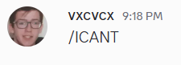
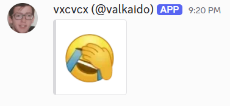
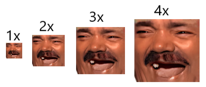

1. Inviter Dmoji sur le serveur
Ajoutez le bot au serveur où vous voulez utiliser les émotes et terminez l'invitation avec les autorisations nécessaires pour qu'il puisse renvoyer correctement les messages.
Dmoji repère les codes d'émote comme /KEKW, vérifie qu'ils existent bien dans la liste
disponible, supprime le message d'origine puis renvoie le résultat avec le pseudo affiché, l'avatar,
le texte et les pièces jointes prises en charge.



Une installation fonctionnelle demande simplement le bot sur votre serveur et un message de test valide. Commencez ici avant de consulter la référence complète.
Ajoutez le bot au serveur où vous voulez utiliser les émotes et terminez l'invitation avec les autorisations nécessaires pour qu'il puisse renvoyer correctement les messages.
Lancez /emotes dans un salon. Une liste s'affichera avec des émotes, la
recherche, vos derniers choix et les favoris déjà enregistrés sur votre compte.
Envoyer un message contenant une ou plusieurs d'émotes. Si tous les d'émotes sont valides, Dmoji renvoie immédiatement le message.
L'ensemble des commandes reste volontairement réduit. Au quotidien, tout se fait surtout directement
dans les messages, tandis que les commandes /emotes et /info servent à chercher,
envoyer et vérifier plus facilement.
/emotesLe sélecteur est le moyen le plus rapide pour parcourir la liste, revoir vos favoris et envoyer une émote sans mémoriser son nom exact.
/emotes nom:<émote> taille:<taille> texte:<message>Utilisez cette version avec options lorsque vous voulez choisir une émote précise, une taille et un texte optionnel dans une seule action.
/infoCet outil aide les modérateurs et les utilisateurs à retrouver quelle émote a été utilisée dans un message précédemment renvoyé par Dmoji.